채널: tvN Joy | 길이: 10:00 | 날짜: 20260611
Golden을 좋아한다고 답하고, 이어 화사의 So Good, So Cute 같은 신곡 농담까지 이어지며 분위기가 풀린다. 이 초반부는 거대 기업 CEO를 딱딱한 경영자가 아니라 한국 대중문화와 자연스럽게 연결되는 인물로 보여준다. K-pop culture, K-beauty, KFC가 뒤섞이는 농담은 이후 한국과 엔비디아의 관계를 말하기 전 친근감을 만드는 장치다.진행자는 젠슨 황이 평소 작업할 때 K팝을 많이 듣는다는 기사를 봤다고 말하며 질문을 시작한다. 젠슨 황은 “누가 Golden을 안 좋아하겠느냐”는 식으로 답하고, 진행자는 그가 Golden을 가장 좋아한다고 받아친다. 이어 화사의 신곡, So Good, So Cute 같은 표현이 오가며 분위기는 기업 경영 인터뷰가 아니라 가볍고 웃음이 섞인 대화로 풀린다. 이 장면은 젠슨 황을 한국 문화와 동떨어진 글로벌 CEO가 아니라, 한국 대중문화의 코드에 반응하는 인물로 설정한다.
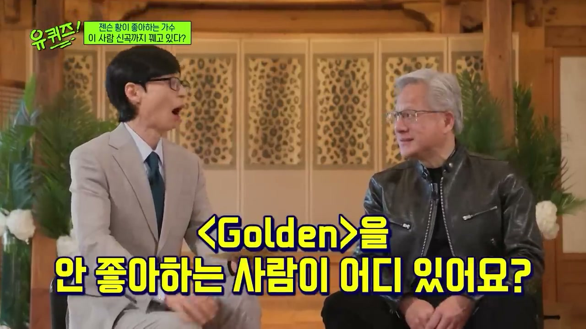
K팝 이야기는 K-pop culture, K-beauty, KFC가 뒤섞이는 농담으로 이어진다. 진행자와 출연자들은 단어를 잘못 듣거나 섞어 말하며 웃음을 만든다. 하지만 이 농담은 단순한 잡담이 아니라, 한국 문화가 세계로 뻗어나간다는 맥락을 깔아준다. 이후 한국 게임 문화와 엔비디아 성장의 연결을 말할 때, 한국이 글로벌 문화와 기술의 한 축이라는 전제가 자연스럽게 이어진다.
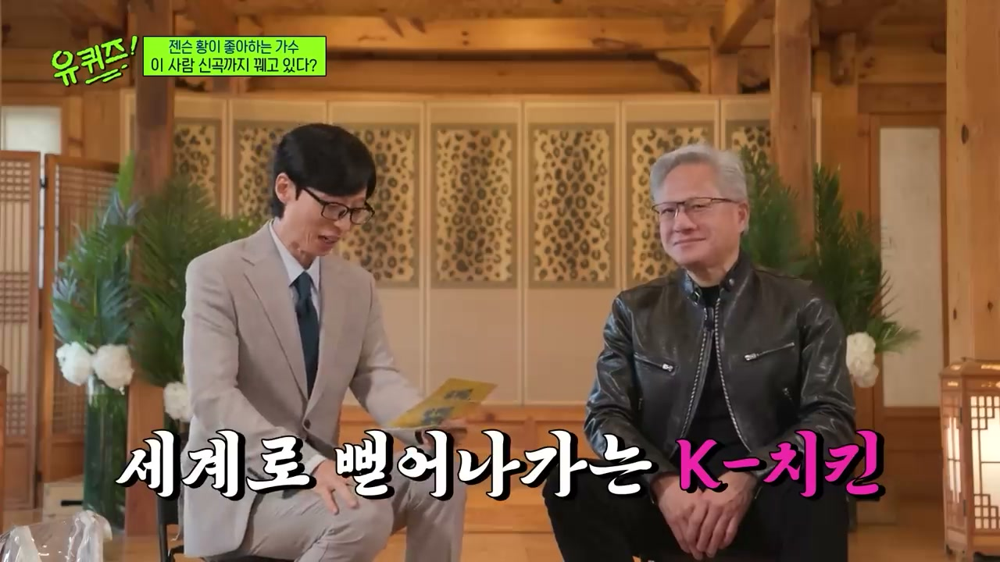
진행자는 한국에서 많은 사람들이 젠슨 황을 좋아하는 이유를 설명한다. 시원시원한 말투, 소탈한 태도, 그리고 밑바닥부터 자수성가한 인생 서사가 그 이유로 제시된다. 그는 전 세계 시가총액 최상위 기업의 CEO이지만, 이미지상으로는 권위적인 재벌 총수가 아니라 직접 현장을 뛰고 고생해온 사람으로 받아들여진다. 이 설명은 “성공하려면 고생을 해야 하는가”라는 질문으로 자연스럽게 이어진다.
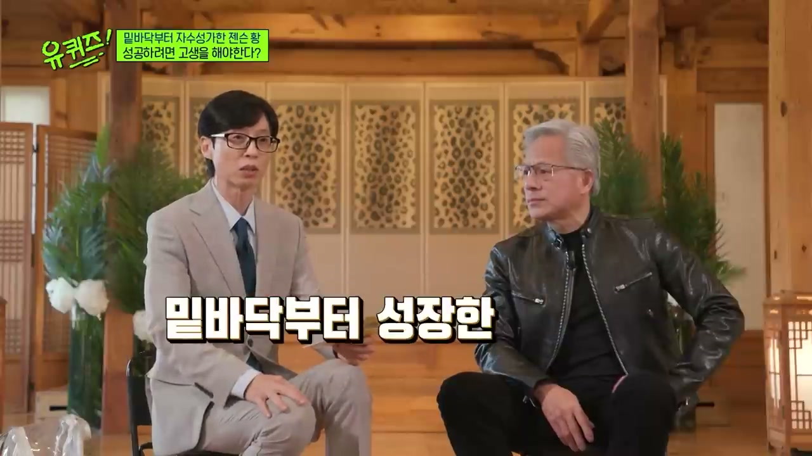
진행자는 젊은 세대에게 성공하려면 고생을 해야 한다는 말을 많이 한다며, 정말 성공하려면 고생해야 하는지 묻는다. 젠슨 황은 고생이 인생의 필수 조건이라고 단순화하지 않는다. 대신 “고생할 필요가 꼭 있는 것은 아니지만, 위대해지려면 고생해야 한다”는 취지로 답한다. 핵심은 고통 자체가 아니라, 실패와 어려움을 통과하며 만들어지는 깊이다.
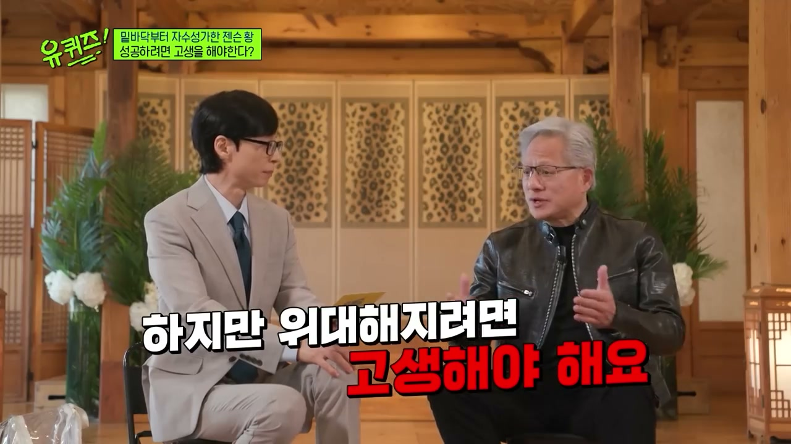
젠슨 황은 사람들이 오랜 시간 고생하면서 자기 예술과 기술을 만들어낸다고 설명한다. 뛰어난 장인이 되는 과정은 단기간의 정보 습득이 아니라 반복, 시행착오, 실패, 재도전의 축적이다. “무엇을 잘못했는가”, “어떻게 다시 시도할 것인가”를 계속 묻는 과정이 실력을 만든다. 그래서 고생은 막연한 인내가 아니라, 자기 일을 더 잘하게 만드는 압력으로 제시된다.
그는 누구도 실패를 좋아하지 않는다고 인정한다. 하지만 실패하지 않았다면 진짜 성공을 이루기 어렵다는 메시지를 던진다. 일을 망치면 많은 사람들이 지켜보고 있고, 그 상황에서 다시 나와 더 잘할 방법을 고민해야 한다. 이 대목은 실패를 숨기거나 피하는 태도가 아니라, 실패를 감당하고 다시 수행하는 능력을 성공의 핵심으로 놓는다.
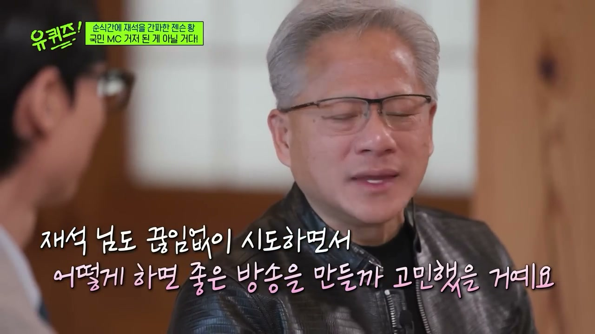
젠슨 황은 엔비디아가 잘되면 사람들이 “젠슨이 해냈다”고 말하지만 실제로는 많은 직원들이 자신을 도왔다고 말한다. 성공은 수많은 구성원의 협업 결과라는 것이다. 그러나 실패했을 때는 대중이 주로 CEO인 자신을 본다고 설명한다. 그래서 리더는 비판, 창피함, 실패를 견디고 다시 돌아와 더 나은 일을 해야 한다.
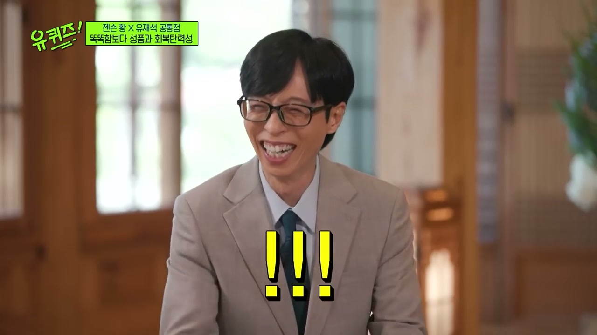
젠슨 황은 오늘날 지능과 지식은 과거보다 얻기 쉬워졌다고 말한다. 인공지능이 있고, 인터넷이 있으며, 정보 접근성이 넓어졌기 때문이다. 하지만 성품, 회복탄력성, 다시 일어나는 힘은 쉽게 얻어지지 않는다. 그것은 삶의 경험, 실패할 기회, 실패 후 복귀하는 과정을 통해서만 단련된다.
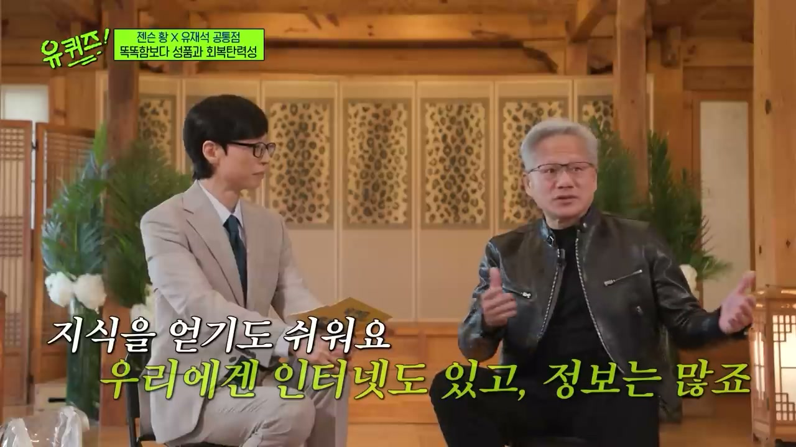
진행자는 젠슨 황의 말이 당연해 보이지만 그 안에 꾸준함과 회복탄력성이 들어 있다고 해석한다. 어떤 실패도 다시 일어날 수 있는 힘으로 바꿀 수 있어야 한다는 것이다. 이 대목에서 “실패하면 나도 욕먹는다”는 농담이 나오며, 세계적 CEO도 실패의 부담에서 자유롭지 않다는 사실이 강조된다. 결국 성공의 필수 요소는 실패를 피하는 능력이 아니라 실패 후 돌아오는 능력이다.
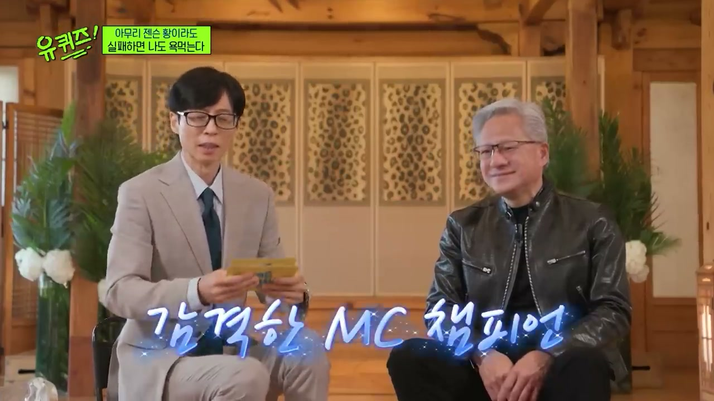
방송은 1993년 젠슨 황이 설거지를 하던 데니스 식당에서 엔비디아를 창업했다는 서사를 소개한다. 지금은 세계 시가총액 최상위 기업이지만 처음부터 잘된 것은 아니었다. 파산까지 30일 남은 것 같은 절박한 순간도 있었다고 설명된다. 이 사례는 “성공 기업”의 현재만 보면 보이지 않는 실패와 위기를 보여준다.
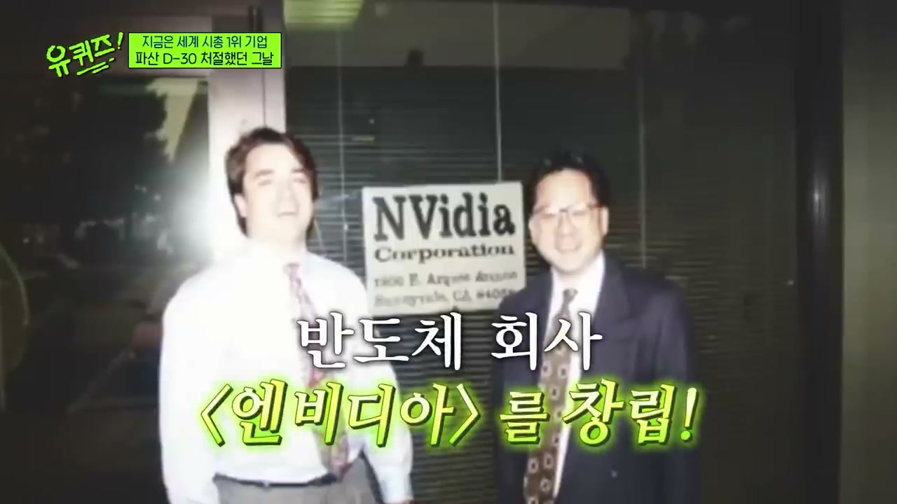
젠슨 황은 사업이 망하면 직원들이 일자리를 잃는다고 말한다. 그는 역경과 좌절 속에서도 깨어 있어야 하며, 어려운 상황일수록 사람들이 더 날카로워진다고 설명한다. 쉬운 시기에는 나오지 않는 아이디어가 어려운 때 나올 수 있다는 것이다. 그는 성공을 좋아하지만, 힘든 시기에 자신과 조직이 최고의 역량을 발휘한다는 점도 인정한다.
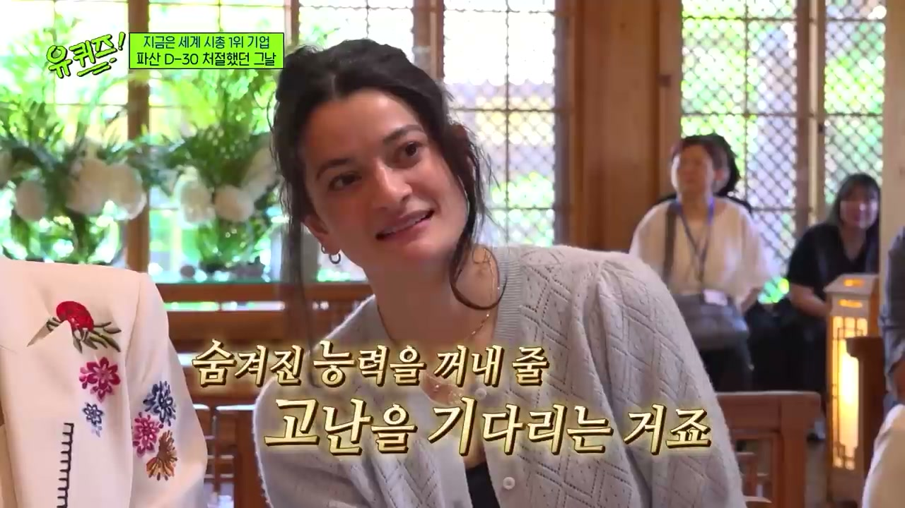
진행자는 젠슨 황의 말대로 위기 속에서 기회를 발견하고, 그 기회를 결국 꽃피운 점이 중요하다고 정리한다. 동시에 그것은 젠슨 황 혼자만의 능력이 아니라 함께해준 많은 사람들의 성취라고 말한다. 젠슨 황 역시 회사에 수많은 사람들이 합류했기 때문에 가능했다고 설명한다. 성공의 주체는 한 명의 천재가 아니라, 위기 속에서 함께 버티고 성장한 조직이다.
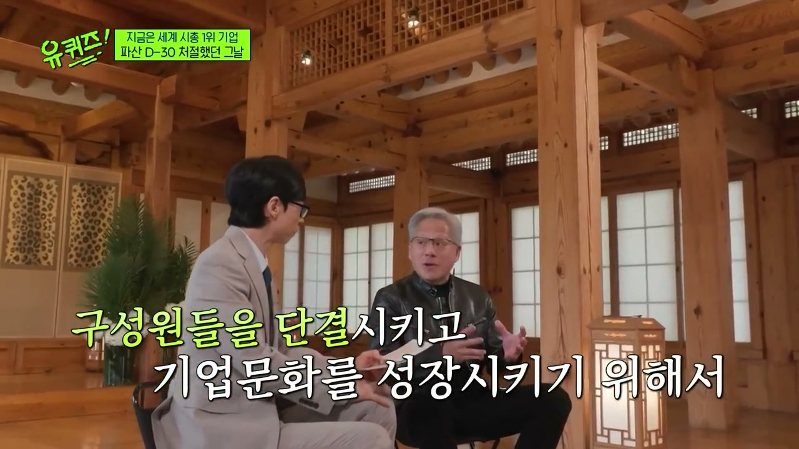
후반부에서 진행자는 젠슨 황이 용산 전자상가에 가서 명함을 돌리며 영업했다는 이야기가 사실인지 묻는다. 젠슨 황은 사실이라고 답하고, 자신이 한국에 왔으며 엔비디아와 한국이 비슷한 시기에 성장했다고 말한다. 당시 용산 전자상가는 컴퓨터, 부품, 게임 시장의 중요한 거점이었다. 1990년대 후반 컴퓨터와 게임에 대한 관심이 커지던 시기와 엔비디아의 성장 궤적이 맞물린다.
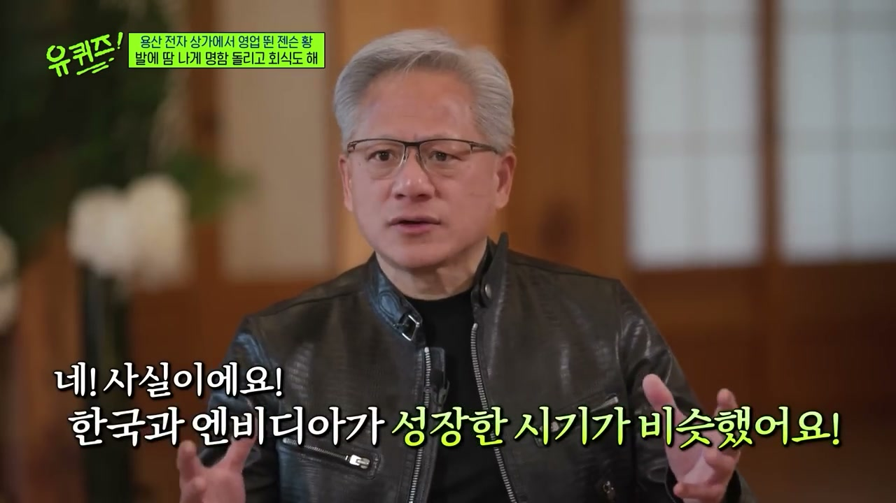
방송은 용산 전자상가에 게임방 관련 수요가 몰렸고, 게임방들이 한꺼번에 수십 대의 컴퓨터를 구매하면서 컴퓨터 품귀 현상까지 생겼다고 설명한다. 젠슨 황은 한국이 비디오게임과 e스포츠를 통해 엔비디아와 가까운 마음의 관계를 맺었다는 취지로 말한다. 한국 게이머들이 없었다면 엔비디아 기술이 세계적 현상이 되는 과정도 달라졌을 것이라는 의미가 담긴다. 그는 한국 게이머들의 우정과 호의, 엔비디아 브랜드에 대한 애정에 깊이 감동했다고 말한다.
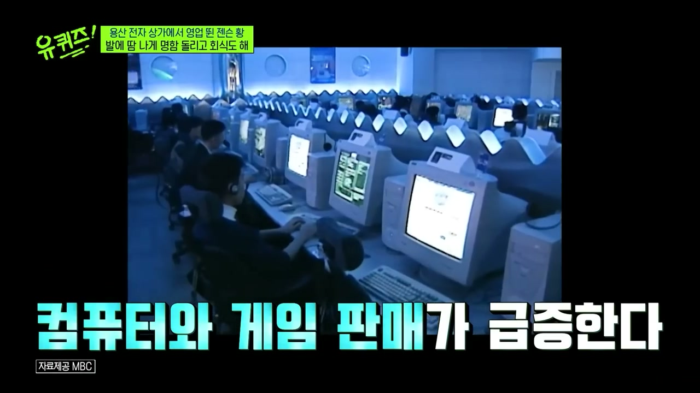
젠슨 황은 “We grew up together”라고 말하며 한국과 엔비디아의 관계를 요약한다. 진행자는 이를 엔비디아의 역사와 대한민국의 게임 산업, 테크 산업이 함께 성장했다는 뜻으로 해석한다. 한국의 PC방 문화, e스포츠, 게이머 커뮤니티는 엔비디아 제품 수요와 브랜드 신뢰를 키운 토양이었다. 댓글에 언급된 용산 상가 사장들과의 회식 일화까지 더해지며, 이 관계는 단순한 시장 진출이 아니라 현장 영업과 사람 사이의 인연으로 마무리된다.
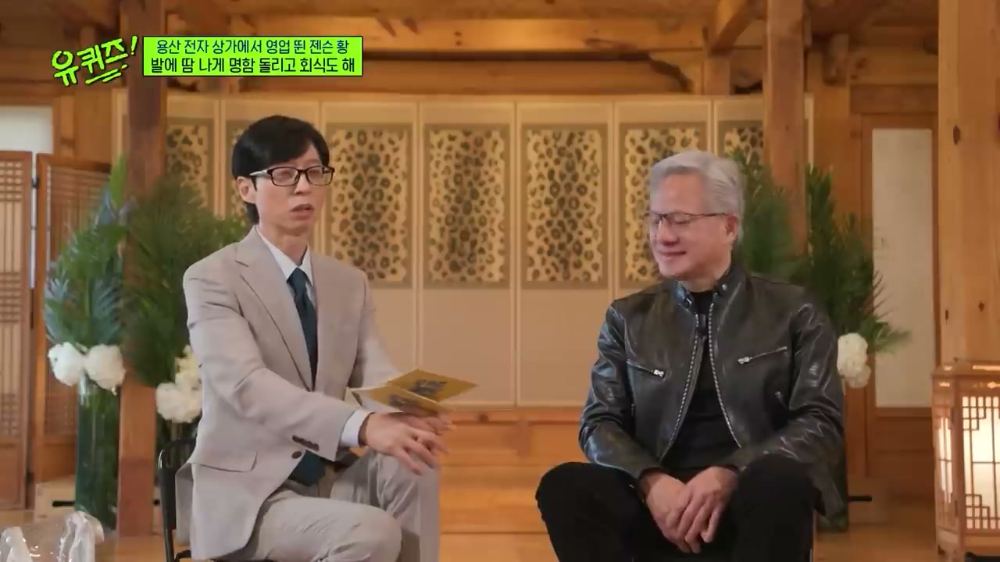
“인생에서 고생할 필요가 꼭 있는 것은 아니지만, 위대해지려면 고생해야 한다.”
“실패를 좋아하는 사람은 없지만, 실패하지 않았다면 성공하기 어렵다.”
“엔비디아가 잘되면 사람들이 젠슨이 했다고 말하지만, 사실은 많은 직원들이 도와준 것이다.”
“실패했을 때 사람들은 나를 본다. 그래서 비판, 창피함, 실패를 받아들이고 다시 돌아와야 한다.”
“지식은 쉽다. 인공지능도 있고 인터넷도 있고 정보도 많다. 하지만 성품과 회복탄력성은 어렵다.”
“역경과 좌절 속에서도 깨어 있어야 한다. 어려운 때 사람들은 더 날카로워진다.”
“한국과 엔비디아는 비슷한 시기에 성장했다.”
“We grew up together.”
이 영상의 핵심은 성공의 조건을 지능, 정보, 운, 직함이 아니라 고생을 통과하며 생기는 성품과 회복탄력성으로 본다는 점이다. 젠슨 황은 실패를 낭만화하지 않지만, 실패를 감당하고 다시 나와 더 잘하려는 과정 없이는 위대함에 도달하기 어렵다고 말한다. 동시에 성공을 개인 영웅담으로만 설명하지 않고, 수많은 직원과 동료, 시장, 고객, 문화가 함께 만든 결과로 본다. 엔비디아의 현재 위상은 1993년 창업, 파산 직전의 위기, 용산 전자상가 영업, 한국 PC방과 e스포츠 문화, 한국 게이머들의 지지까지 이어지는 긴 축적의 결과로 제시된다. 결국 영상이 말하는 “OO”은 단순한 고통이 아니라 실패를 감당하는 고생, 다시 돌아오는 힘, 그리고 함께 성장하는 조직문화다.
댓글
GitHub 이슈 기반 댓글 시스템입니다.